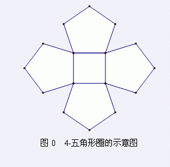

有一种图形叫做五角形圈。一个五角形圈的中心有1个由n个顶点和n条边组成的圈。在中心的这个n边圈的每一条边同时也是某一个五角形的一条边，一共有n个不同的五角形。这些五角形只在五角形圈的中心的圈上有公共的顶点。如图0所示是一个4-五角形圈。

现在给定一个n五角形圈，你的任务就是求出n五角形圈的不同生成树的数目。还记得什么是图的生成树吗？一个图的生成树是保留原图的所有顶点以及顶点的数目减去一这么多条边,从而生成的一棵树。
注意：在给定的n五角形圈中所有顶点均视为不同的顶点。
| F.A.Qs | Home | Discuss | ProblemSet | Status | Ranklist | Contest | 入门OJ | ModifyUser Xeonacid | Logout | 捐赠本站 |
|---|
输入包含多组测试数据。第一行包含一个正整数T，表示测试数据数目。每组测试数据包含一个整数n(
对每一组测试数据，输出一行包含一个整数x，表示n五角形圈的生成树数目模2007之后的结果。